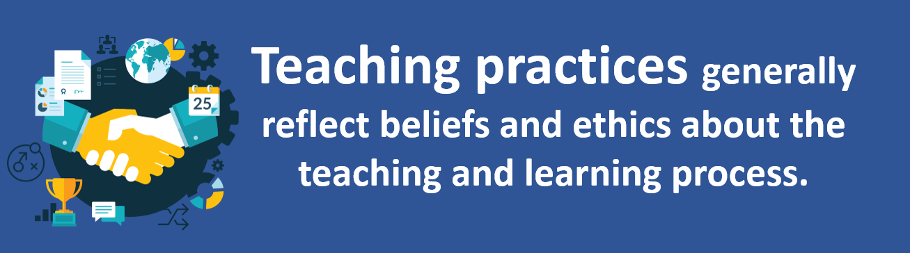
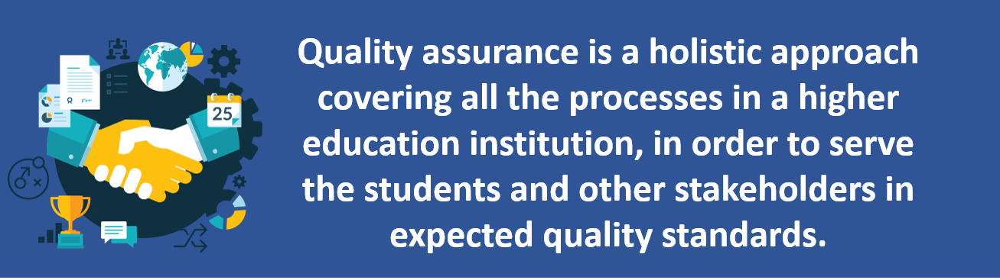
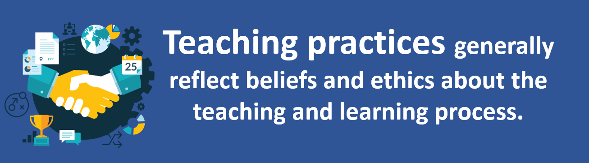
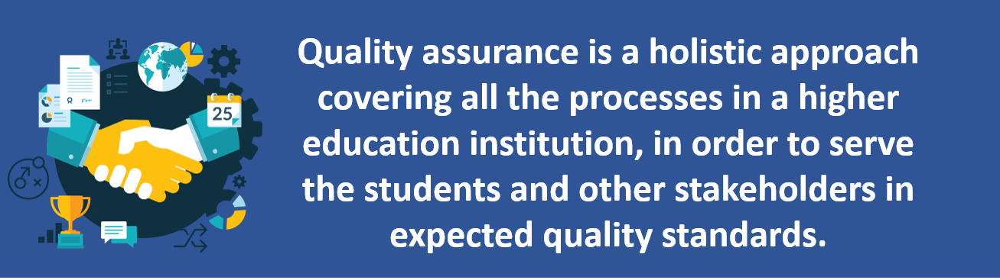
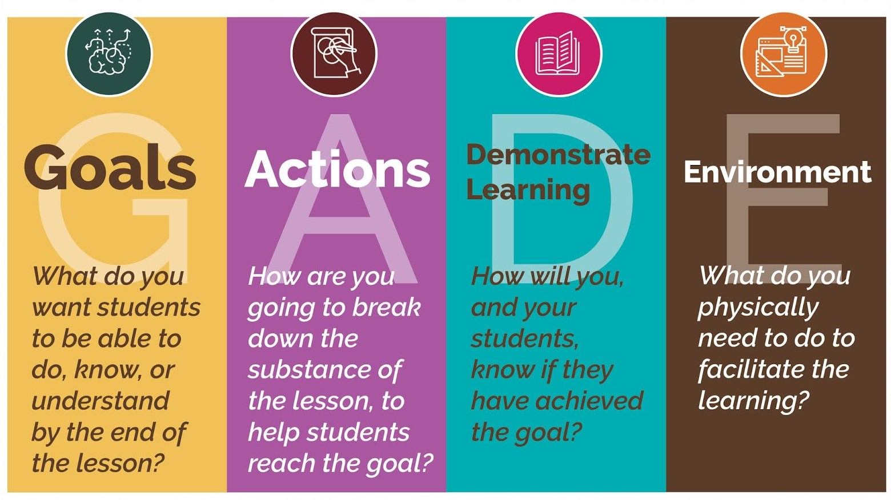

Session Details
- Date: 27th November 2020
- Topic: Teaching Practice
- Resource Person: Prof. Colin N Peiris
19. Teaching Practice
Topics covered in this session
- Highly Effective Teaching Practices
- Good planning
- Effective Lesson Planning
- Characteristics of a Good Lesson
- Quality Assurance in Higher Education
- Manual for Institutional Review of Sri Lankan Universities and Higher Education Institutions
- Sri Lanka Qualifications Framework
Highly Effective Teaching Practices
- Teacher Clarity
When a teacher begins a new unit of study or project with students, she clarifies the purpose and learning goals, and provides explicit criteria on how students can be successful. It's ideal to also present models or examples to students so they can see what the end product looks like.
- Classroom Discussion
Teachers need to frequently step offstage and facilitate entire class discussion. This allows students to learn from each other. It's also a great opportunity for teachers to formatively assess (through observation) how well students are grasping new content and concepts.
- Feedback
How do learners know they are moving forward without steady, consistent feedback? They often won't. Along with individual feedback (written or verbal), teachers need to provide whole-group feedback on patterns they see in the collective class' growth and areas of need. Students also need to be given opportunities to provide feedback to the teacher so that she can adjust the learning process, materials, and instruction accordingly.
- Formative Assessments
In order to provide students with effective and accurate feedback, teachers need to assess frequently and routinely where students are in relation to the unit of study's learning goals or end product (summative assessment). Hattie recommends that teachers spend the same amount of time on formative evaluation as they do on summative assessment.
- Metacognitive Strategies
Students are given opportunities to plan and organize, monitor their own work, direct their own learning, and to self-reflect along the way. When we provide students with time and space to be aware of their own knowledge and their own thinking, student ownership increases.
Good Planning;
- Keeps the teacher & students on track
- Achieves the objectives
- Help teachers to avoid “unpleasant” surprises
- Provide the road map & visuals in a logical sequence
- Encourage reflection, refinement & improvement
- Enhance student achievements
Effective Lesson Planning
- Effective Teachers;
- Know the development of the student
- Use effective communication
- Manage the teaching environment properly
- A good teacher should have good;
- Strategies – (good strategies)
- Operation – (well operation)
- Tactics – (good tactics)
- A good teacher should know better;
- Strategic management.
- Operational management
- Tactics management.

A Good Lesson
- Should have a format
- Try to conceptualize the lesson
- Minimize the number of letters
- Do a pre assessment
- Know who are the audience
- What modifications they need
- How they want to learn?
- What they already know?
- Know objectives
- A description of what the student will be able to do after the session
- Materials
- Plan, Prepare, have on hand
- Prepare your resources / materials before the session
- Warm up & introduction
- Grab the student attention
- Be creative
- Procedures & presentation
- Provide a quick review of previous learning
- Provide modeling of a new skill
- Learning activities
- Creative play – Projects
- Debates – Peer presenting
- Game making – inquiry learning
- Practice (Applying what is learned)
- Closure
- Leave student with an imprint of what the lesson covered
- Student summarize the major concepts
- Teacher recaps the main points
- Evaluation
- In class / homework assignment
- Performance assessment
- Portfolios
- Journals
- Informal assessment
- Use of rubrics
- Reflection
- What went well in the lesson?
- What problem did I experience?
- Why we did this/ What can we do better in next time
Quality Assurance in Higher Education
Quality assurance is a holistic approach covering all the processes in a higher education institution, in order to serve the students and other stakeholders in expected quality standards. The success of a quality assurance system depends on the support of the management. Hence, quality assurance should also cover the strategic management, process management and measuring-monitoring system which interact with each other for enabling the institutions to improve its processes.
Manual for Institutional Review of Sri Lankan Universities and Higher Education Institutions
Edition-2015